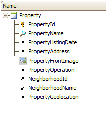
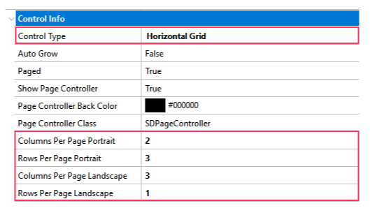

The Horizontal Grid control offers a cool way to visualize the elements of a list. It lets you show the elements horizontally, instead of the usual vertical way for a Grid. Also, it lets you control the way the elements are shown, letting you choose the number of columns and rows you want to display by page. For example 2 columns and 3 rows per page:
You can follow the next few steps for implementing a simple example. 1. Create the following Transaction object with the Work With Pattern applied, and add some registers to the database.  2. In the List node on the Grid properties set the Control Type property to "Horizontal Grid" value.  3. When you set the control type property to "Horizontal Grid" the next properties become available. Set the Columns and Rows per page (Portrait and Landscape). PropertiesThe properties which can let you customize the behavior and looks of the Horizontal Grid are:
You can see the result on the next two images, depending on the orientation of your device and the properties settings how many rows and columns will be shown per page. Portrait:
and Landscape:
Note: the last image shows a photo of the device taken when the device is in portrait mode, you may notice the changes in the number of rows and columns shown.
|